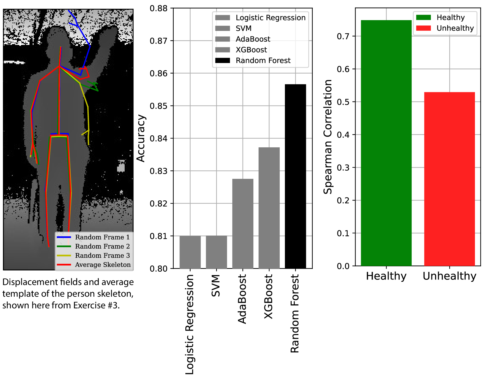

ExerAIde in Action
ExerAIde utilizes advanced motion analysis techniques to enhance rehabilitation exercises. By capturing skeletal motion during exercises at distinct time frames, it visualizes joint positions and displacement fields, highlighting differences in movement patterns. ExerAIde employs a Random Forest Classifier (RFC), which significantly outperforms other classifiers such as SVM, AdaBoost, XGBoost, and Logistic Regression. This ensures a high level of accuracy in identifying critical joints and distinguishing between healthy and unhealthy movements. Additionally, the strong alignment of ExerAIde’s joint importance ranking with actual displacement fields validates its effectiveness. This allows therapists to develop highly personalized therapy programs, leading to better recovery outcomes and improved patient performance.

Figure 2: Left) Visualization of the skeletal motion and the displacement fields.
Mid) Performance comparison with other methods.
Right) Spearman correlation comparison, depicting the strong alignment of our framework’s joint importance ranking with the ground truth displacement fields.

Figure 3: Comparative analysis of healthy vs. unhealthy movements across nine exercises in standing and sitting positions. Depth sensor images (upper panel) show exercises with corresponding VQ-VAE-derived embeddings (lower panel), where red and green dots indicate unhealthy and healthy movements. Keypoints colored by importance, with blue circles highlighting significant joints for distinguishing movement quality, emphasize the critical role of specific joints in rehabilitation assessment.
To further enhance the analysis, ExerAIde incorporates Vector Quantized Variational AutoEncoder (VQ-VAE) derived quantized latent space embeddings. This technique provides a comprehensive view of movement quality across various exercises. In the comparative analysis shown, the top row displays depth sensor images of a subject performing nine different exercises in both standing and sitting positions. These images provide a visual reference for the range of motion involved in each exercise.
The lower panel of the analysis presents scatter plots that correspond to each exercise, where red and green dots represent unhealthy and healthy movements, respectively. The keypoints are colored based on their importance, determined by the RFC, using an inferno heatmap color scheme from low (yellow) to high (black) importance. Notably, blue circles highlight the joints with the maximum distance between centroids of healthy and unhealthy clusters, emphasizing their crucial role in distinguishing movement quality.
This visualization underscores the importance of specific joints in assessing movement patterns and helps therapists pinpoint areas that require more focused attention. By leveraging this detailed and visually intuitive analysis, ExerAIde enables more effective monitoring and adjustment of rehabilitation programs, ultimately leading to improved patient outcomes.